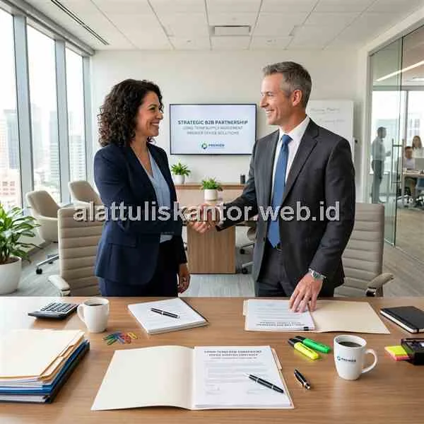

Pengantar: Memilih Distributor untuk Jangka Panjang
Memilih distributor alat tulis kantor untuk transaksi sekali beli jauh berbeda dengan memilih mitra untuk kerja sama jangka panjang. Ketika perusahaan berencana menjalin kontrak multi-tahun, kekhawatiran soal legalitas dan keaslian barang yang biasanya menjadi perhatian utama di awal kerja sama perlu dilengkapi dengan pertimbangan yang lebih strategis: apakah distributor ini mampu bertahan dan berkembang bersama kebutuhan perusahaan yang terus berubah selama bertahun-tahun ke depan?
Artikel ini membahas kriteria memilih distributor alat tulis kantor yang tepat khusus untuk kerja sama jangka panjang, melampaui sekadar verifikasi legalitas dasar yang biasanya sudah dilakukan pada tahap awal seleksi vendor.
ATK Prima Distribusi, sebagai distributor yang telah menjalin kerja sama multi-tahun dengan berbagai korporasi, memahami betul apa yang dibutuhkan untuk kemitraan yang berkelanjutan. Konsultasi kebutuhan pengadaan kontrak jangka panjang Anda dapat dilakukan via WhatsApp di 088989643555.
Ringkasan Kriteria Distributor Terpercaya
Kriteria memilih distributor alat tulis kantor untuk kerja sama jangka panjang mencakup enam aspek utama: (1) rekam jejak stabilitas bisnis minimal 5 tahun, (2) ketersediaan account manager dedicated untuk komunikasi berkelanjutan, (3) kemampuan skalabilitas mengikuti pertumbuhan perusahaan, (4) fleksibilitas evaluasi kontrak, (5) sistem pelaporan kinerja yang transparan, dan (6) komitmen investasi pada teknologi pemesanan. Distributor yang hanya kuat di legalitas namun lemah di keenam aspek ini berisiko menjadi mitra sesaat saja.
Mengapa Kriteria Kerja Sama Jangka Panjang Berbeda dari Seleksi Awal
Pada tahap awal seleksi vendor, perusahaan umumnya fokus memverifikasi legalitas usaha, keaslian produk, dan kesesuaian harga. Namun, begitu kontrak berjalan bertahun-tahun, tantangan yang muncul justru bergeser ke aspek keberlanjutan hubungan bisnis: apakah distributor tetap responsif setelah kontrak diteken, apakah mereka mampu menyesuaikan volume pasokan ketika perusahaan berkembang pesat, dan apakah ada mekanisme jelas untuk mengevaluasi kesepakatan seiring perubahan tren dari waktu ke waktu.
6 Kriteria Distributor untuk Kerja Sama Jangka Panjang
1. Rekam Jejak Stabilitas Bisnis Minimal 5 Tahun
Distributor yang telah beroperasi minimal lima tahun umumnya telah melewati berbagai siklus bisnis dan tantangan operasional, sehingga lebih mungkin bertahan dan konsisten melayani kontrak jangka panjang dibanding distributor yang baru berdiri dalam satu atau dua tahun terakhir.
2. Ketersediaan Account Manager Dedicated
Kerja sama jangka panjang membutuhkan komunikasi yang konsisten, bukan sekadar transaksi lewat customer service umum. Distributor yang menyediakan account manager khusus untuk klien korporat memungkinkan eskalasi masalah dan permintaan khusus ditangani lebih cepat dan personal, tanpa harus menjelaskan konteks kerja sama dari awal setiap kali menghubungi.
3. Kemampuan Skalabilitas Mengikuti Pertumbuhan
Perusahaan yang berkembang pesat membutuhkan distributor yang mampu menyesuaikan kapasitas pasokan, baik dari sisi volume maupun variasi produk, tanpa harus berganti vendor di tengah jalan. Tanyakan mengenai kapasitas gudang dan jaringan pasokan mereka untuk mengantisipasi lonjakan.
4. Fleksibilitas Evaluasi dan Negosiasi Ulang Kontrak
Kontrak jangka panjang yang baik sebaiknya memiliki klausul evaluasi berkala (misalnya setiap 6 atau 12 bulan) yang memungkinkan kedua pihak menyesuaikan harga, volume, atau syarat pembayaran sesuai kondisi pasar terkini, tanpa harus menunggu kontrak berakhir sepenuhnya.
5. Sistem Pelaporan Kinerja Transaksi Transparan
Distributor yang matang biasanya menyediakan laporan berkala mengenai riwayat transaksi, ketepatan waktu pengiriman, dan tingkat akurasi pesanan, yang dapat digunakan tim procurement untuk mengevaluasi kinerja vendor secara objektif, bukan berdasarkan perasaan (subjektif).
6. Komitmen Investasi pada Teknologi Pemesanan Digital
Distributor yang berinvestasi pada sistem digital, seperti portal pemesanan online atau integrasi dengan sistem pengadaan internal perusahaan, menunjukkan komitmen jangka panjang untuk meningkatkan efisiensi proses operasional antar-perusahaan.
Tabel Perbandingan: Sekali Beli vs Jangka Panjang
| Aspek | Fokus Transaksi Sekali Beli | Fokus Kerja Sama Jangka Panjang |
|---|---|---|
| Prioritas Utama | Harga termurah saat itu juga | Stabilitas harga & pasokan jangka panjang |
| Komunikasi | Customer service umum | Account manager dedicated |
| Evaluasi Kinerja | Tidak terstruktur | Laporan berkala & terukur |
| Skalabilitas | Tidak relevan | Kritis untuk menunjang pertumbuhan bisnis |
Cara Mengevaluasi Distributor Sebelum Menandatangani Kontrak
- Minta referensi (testimoni riil) dari klien korporat yang telah bermitra minimal 2 tahun.
- Tanyakan struktur tim yang akan secara khusus melayani (menangani) akun perusahaan Anda.
- Diskusikan skenario ekstrem (misalnya lonjakan kebutuhan 2-3 kali lipat mendadak) untuk menguji kesiapan mereka.
- Pastikan klausul evaluasi harga dan Service Level Agreement (SLA) tercantum di draf kontrak.
- Uji coba sistem pemesanan (digital/katalog) yang ditawarkan sebelum kontrak penuh ditandatangani.
Studi Kasus: Evolusi Kerja Sama Selama 4 Tahun
PT Maju Bersama Industri memulai kerja sama dengan distributor ATK pada skala kecil dengan kebutuhan sekitar 50 karyawan. Dalam empat tahun, perusahaan tersebut berkembang pesat hingga mempekerjakan lebih dari 300 karyawan di tiga lokasi berbeda. Karena distributor yang mereka pilih di awal memiliki sistem pelaporan kinerja transparan dan account manager dedicated, proses penyesuaian volume dan penambahan lokasi pengiriman dapat dilakukan bertahap tanpa perlu berganti vendor, sekaligus mempertahankan harga kontrak yang tetap kompetitif.
Membangun Hubungan Kerja Sama Saling Menguntungkan
Kerja sama jangka panjang yang sehat idealnya bersifat dua arah, bukan hanya perusahaan yang menuntut kinerja terbaik, tetapi distributor juga mendapatkan kepastian volume dan termin pembayaran tepat waktu. Komunikasi terbuka mengenai proyeksi kebutuhan di masa depan—termasuk rencana ekspansi—akan membantu distributor mengalokasikan stok di gudang secara efisien.
Menyusun Klausul Kontrak yang Melindungi Kedua Pihak
Kontrak yang kuat memuat konsekuensi jika terjadi wanprestasi (misalnya keterlambatan pengiriman berulang dari distributor atau keterlambatan bayar dari perusahaan). Klausul ini ada bukan untuk memicu konflik, melainkan memberi kejelasan exit strategy atau problem solving jika ada yang tidak beres di tengah jalan, sehingga hubungan kemitraan tetap dapat diselamatkan ketimbang diputus sepihak.
Pertanyaan yang Sering Diajukan (FAQ)
Kesimpulan
Memilih distributor alat tulis kantor untuk kerja sama jangka panjang membutuhkan pertimbangan yang lebih dalam dibanding sekadar mencari harga termurah di putaran penawaran pertama. Dengan mengevaluasi stabilitas bisnis, profil layanan klien korporat, fleksibilitas kontrak, dan infrastruktur operasional, Anda memastikan terbentuknya kemitraan supply chain ATK yang dapat diandalkan untuk menopang pertumbuhan bisnis perusahaan Anda selama bertahun-tahun.
Ingin menjalin kerja sama pengadaan jangka panjang (B2B) yang terpercaya untuk bisnis Anda? Silakan hubungi tim kami via WhatsApp di 088989643555 untuk menjadwalkan presentasi profil perusahaan atau pengajuan proposal kontrak.